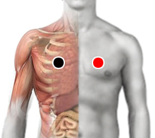

Estreptococo A Pyogenes
Pares
pectoral - pectoral
talón - talón
testículo - angina

Generalidades:
Bacteria gram-negativa del grupo A que forma cadenas de 4 a 10 cocos. Se manifiesta con síntomas respiratorios como faringitis con supuración acompañada de inflamación de: amígdalas, ganglios linfáticos, úvula (campanilla), presenta petequias (puntos rojos en el paladar). Los síntomas aparecen en forma abrupta. También puede provocar otitis y mastitis.
Otra manifestación se presenta con lesiones en la piel (impétigo, erisipela, psoriasis) se le conoce como "comedor de piel".
También provoca trastornos en sangre, ataca eritrocitos y efecto beta-hemolítico. Además cuenta con varias toxinas como: estreptolisina, toxina pirogénica, estreptoquinasa, hialuronidasa, estreptodornasa, etc.; que aumentan su virulencia.
Complicaciones:
Los niños son más propensos a presentar complicaciones. Puede alterar al sistema inmune provocando: meningitis, fiebre reumática, síndrome de choque tóxico o glomerulonefritis.
Transmisión
Muy contagioso: por contacto directo; por objetos como platos, vasos, prendas; por vía aérea (pequeñas gotas de saliva)